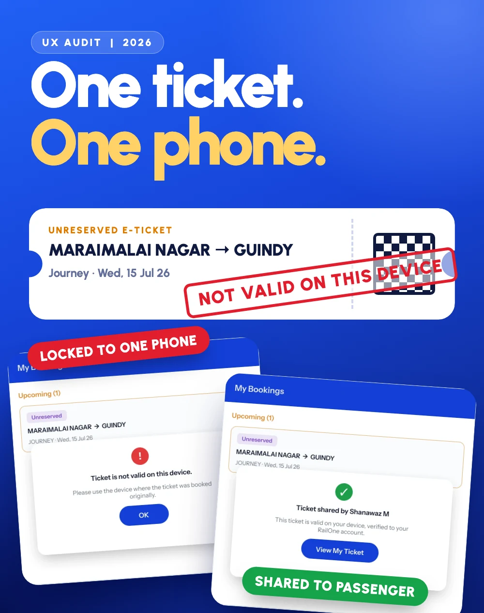
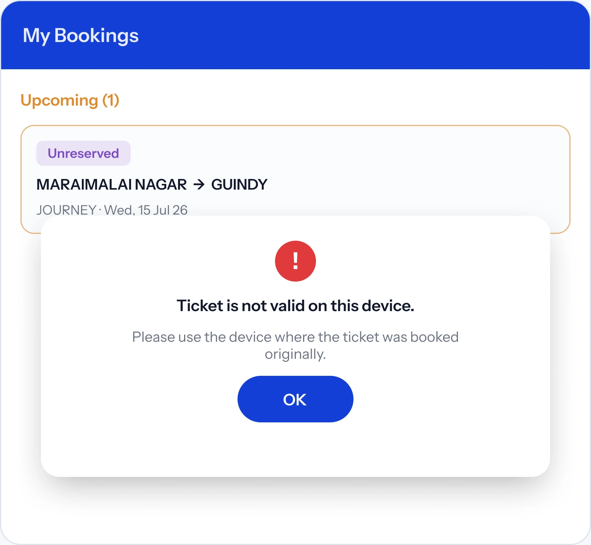
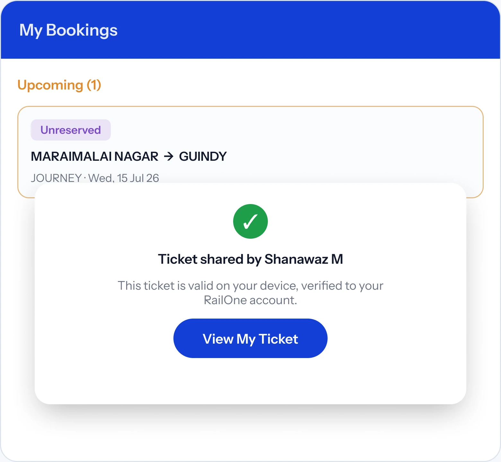
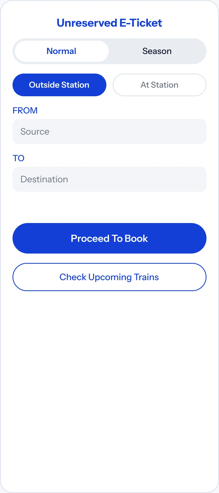
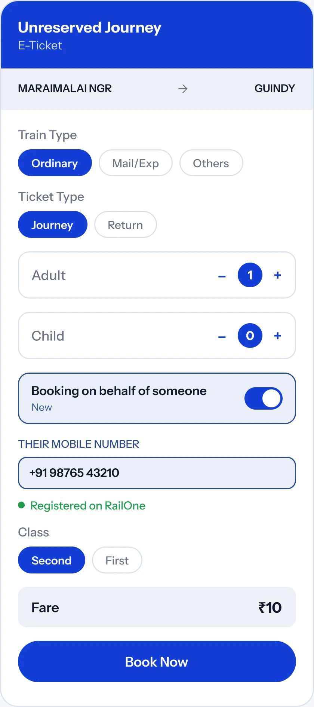
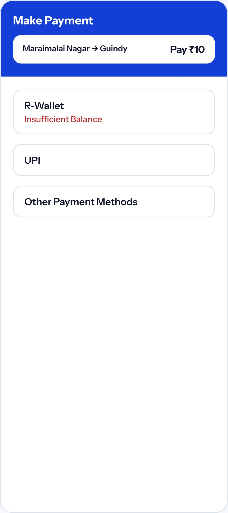
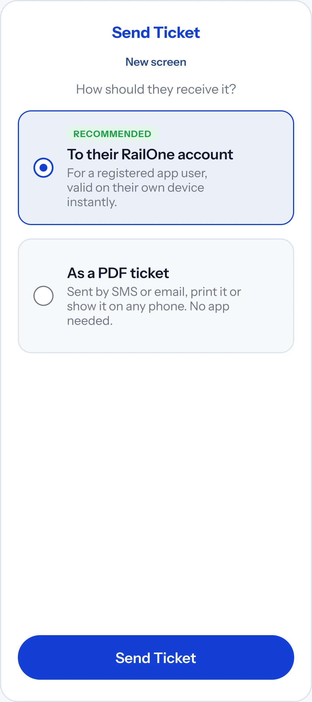

UX CASE STUDY
RailOne's e-ticket only works on the one phone that booked it.
A real story from a Chennai suburban commuter, and why RailOne's device-locked tickets fail everyone who books for someone else.

THE PROBLEM
A valid ticket, a train at the platform, and no way to board.
I take a monthly season pass to board my local train at Maraimalai Nagar. It expired the day before, and I didn't notice until I was standing on the platform, train arriving, exactly when I always arrive.
The only fix left was to call a friend and have him book me a ticket on his RailOne app. There's no way to share a ticket to another passenger. So I tried logging into his account on my own phone instead, and RailOne blocked that too: "Ticket is not valid on this device. Please use the device where the ticket was booked originally."
With the train doors already open, I had no valid way to board.
WHO ELSE THIS BREAKS FOR
It is not just one missed train.
The parent who doesn't use a smartphone
An elderly parent takes the same local train every day to avoid highway traffic and long station queues. Their adult children, often working in a different city, want to book tickets for them remotely. RailOne has no way to do this. The ticket exists only on a phone the parent doesn't carry, can't operate, or doesn't own.
Two tickets, one phone, two coaches
A husband and wife travel together but board separate, gender-segregated coaches, standard practice on Indian suburban trains. If one of them books both tickets on their own phone, the other has nothing valid to show a ticket examiner. Not a screenshot. Not a photo. Nothing that counts.
IN THEIR OWN WORDS
What it feels like on the platform.
The train doors are open. I've done nothing wrong. I still can't board.
The missed season pass
I don't want to ask my kids to take a day off work just to buy me a train ticket.
The elderly parent
I paid for two tickets. I'm standing in the wrong coach trying to prove it.
Two tickets, one phone
OBSERVED VS PROPOSED
Same screen, one small change in who the ticket belongs to.
OBSERVED: REAL SCREENSHOT

PROPOSED FIX

THE FIX, IN DETAIL
One toggle, right where Adult and Child counts already live.
Leave it off and nothing changes. Switch it on for an adult passenger, and the ticket is issued to their identity, not bound to your device. No new screen, no extra tab.
As soon as their mobile number is entered, RailOne checks it against its own registered-user database, the same way WhatsApp or GPay detect a contact the moment you enter their number. If they're already on RailOne, the app-to-app option is recommended automatically; if not, the PDF option is. The booker can still override either way.
THE FULL FLOW: TWO SMALL ADDITIONS


NEW

NEWGROUNDED IN UX PRINCIPLES
Not new ideas. Established usability heuristics.
Flexibility & Efficiency of Use
One flow now serves both a tech-savvy commuter and a parent who's never opened the app, without forcing either into the other's path.
User Control & Freedom
The booker chooses how the ticket reaches the real passenger, instead of the system assuming the booker and the traveller are always the same person.
Error Prevention
Removes the exact moment where a valid ticket exists but nobody standing at the platform can show it, before it happens, not after.
Consistency & Standards
Brings this in line with how outstation bus and train PDF tickets already work, so nothing here asks passengers to learn a new mental model.
GOOD FOR EVERYONE
A better outcome for passengers and for Indian Railways.
For passengers
- Dignity for elderly parents booking independently, without needing help
- Peace of mind in last-minute, no-time-to-think moments
- Safety and confidence travelling in separate, gender-segregated coaches
For Indian Railways / RailOne
- Fewer disputed-fine incidents at the platform for TTEs to adjudicate
- Less pressure pushing people back to physical counters, the exact congestion digital ticketing exists to relieve
- Stronger trust among the users most likely to give up on the app after one bad experience
WHY THIS MATTERS NOW
A ticket should belong to the passenger, not the phone.
The design principle
A ticket should be bound to the passenger travelling, not the phone that happened to book it. Device-locking was almost certainly built to stop resale and duplicate use of unreserved tickets, a real problem worth solving. But it solves it by punishing the wrong target: every legitimate group booking, every parent without a smartphone, every last-minute favor from a friend.
The scale of it
RailOne processes roughly 2.34 lakh unreserved ticket bookings a day. Even a small fraction of those being group, family, or proxy bookings, which is common on Indian suburban routes, puts this failure in front of tens of thousands of passengers daily, many of them the exact commuters this app exists to serve.
The cost of trust
Digital ticketing exists to get people off long station queues. Every time it fails someone at the platform, a parent who can't get a ticket at all, a traveller fined for a screenshot, a commuter locked out at the exact moment they need help, it pushes them back toward the counter it was built to replace, and quietly erodes trust in the platform for everyone else watching it happen.
This is an independent UX audit and concept by Sathish Sachithanandam. It is not affiliated with or endorsed by Indian Railways or RailOne.